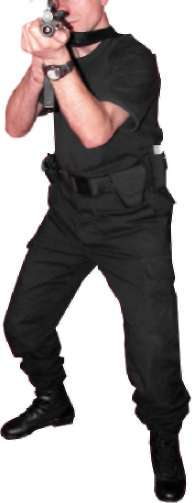
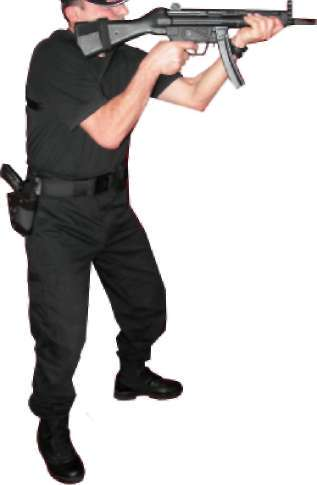
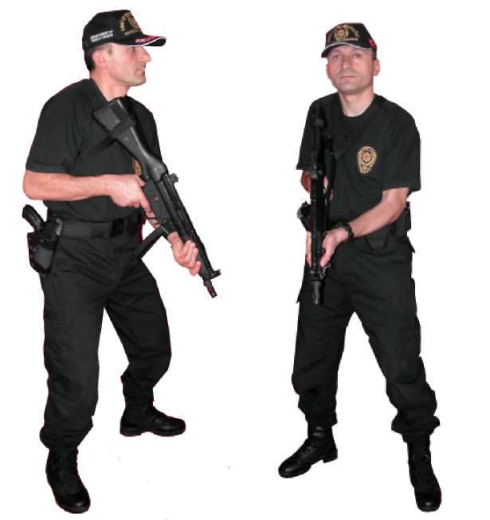
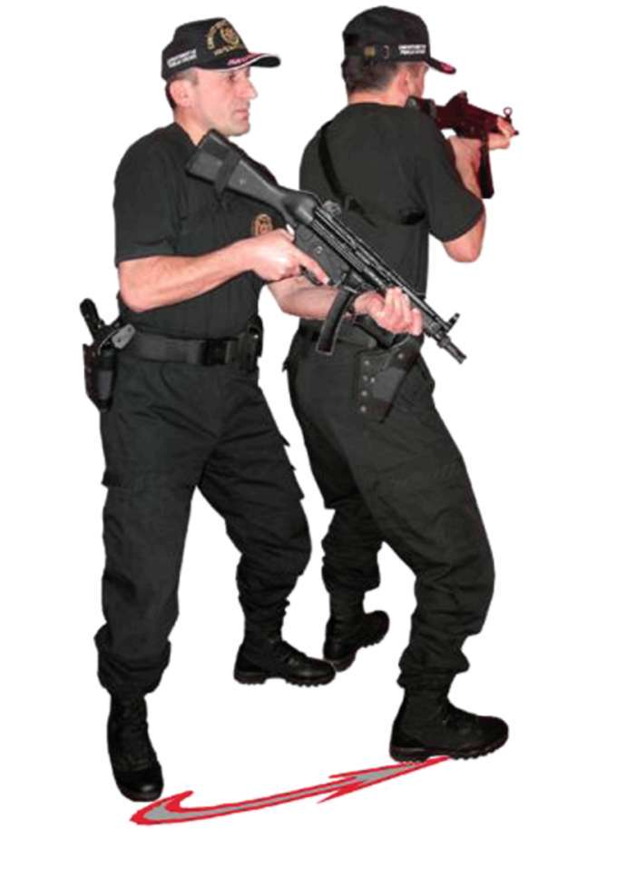

BÖLÜM
İLERİ SEVİYE ATIŞ TEKNİKLERİ
1. Hareket (Yandan Görünüş) 2. Hareket (Önden Görünüş)
0^.
3. Hareket (Yandan Görünüş) 4. Hareket (Önden Görünüş) Resim-13.a) Durarak Öne Doğru Atış Teknikleri 101
2.2.2. Sağdaki Hedeflere Doğru Dönüş ve Atış Tekniği Bulunduğunuz pozisyondan sağ yöndeki hedeflere dönerken, iki elinizle kavramış olduğunuz MP5 makinalı tabancanızın dipçiğinin omuz boşluğundaki kaynağını bozmadan yere 70 derecelik bir açı ile indirin. Eş zamanlı olarak sağ ayağınızın topuğu sabit, sol ayağınızın da parmak ucunda vücudunuzla sağ ayağınızı sağa (hedefe) doğru çevirirken, bozulan sol ayağınızı da sağ
ayağın yanına “L“ oluşturacak biçimde çekin. Hedefe dönüş tamamlandıktan sonra silahınızı hedefe kaldırıp atış yapın. (Bakınız Resim-13.b) Resim-13.b) Durarak MP5 Makinalı Tabanca ile Sağa Dönüş ve Atış Tekniği 102

BÖLÜM
İLERİ SEVİYE ATIŞ TEKNİKLERİ
2.2.3. Soldaki Hedeflere Doğru Dönüş ve Atış Tekniği Sağ yöne dönme tekniğinin tersi uygulanır. Bulunduğunuz pozisyondan sol yöndeki hedeflere dönerken, iki elinizle kavramış olduğunuz MP5 makinalı tabancanızın dipçiğinin omuz boşluğundaki kaynağını bozmadan yere 70 derecelik bir açı ile indirin. Eş zamanlı olarak sol ayağınızın topuğu sabit sağ
ayağınızın da parmak ucunda vücudunuzla sol ayağınızı sola (hedefe) doğru çevirirken, bozulan sağ ayağınızı da sol ayağın yanına “L” oluşturacak biçimde çekin. Hedefe dönüş tamamlandıktan sonra silahınızı hedefe kaldırıp atış yapın. (Bakınız Resim-13.c) Resim-13.c) Durarak MP5 Makinalı Tabanca ile Sola Dönüş ve Atış Tekniği 103
2.2.4. Gerideki Hedeflere Doğru Dönüş ve Atış Tekniği Bulunduğunuz atış pozisyonundan geri istikametteki hedeflere dönerken çift elle kavramış olduğunuz MP5 makinalı tabancanızın dipçiğinin omuz boşluğundaki kaynağını bozmadan yere 70 derecelik bir açı ile indirin. Eş zamanlı olarak dönüş yapacağınız yöndeki ayağınızın topuğu sabit olarak ters ayağınızın parmak ucunda, dönüş yönünüzdeki ayağınızı 180 derece hedefe çevirerek, bozulan ters ayağınızı “L” oluşturacak şekilde yanına çekin. Dönüş tamamlandıktan sonra silahınızı hedefe kaldırıp atış edin. (Bakınız Resim-13.d) Resim-13.d) Durarak MP5 Makinalı Tabanca ile Geriye Doğru Dönüş ve Atış Tekniği 104


BÖLÜM
İLERİ SEVİYE ATIŞ TEKNİKLERİ
Tekniği Uygulamalı Olarak Çalışma Şekli
^ Emniyet tedbirlerini okuyun. Atış poligonuyla ilgili gerekli önlemleri alın.
^ Vücudunuzu basit ısınma teknikleri ile ısındırın ve çalışmaya hazırlayın.
MP5 makinalı tabancayı ve şarjörleri kontrol edip koruyucu malzemeleri giyin ve giydirin.
^ Tekniklerin hepsini atışlı çalışmadan önce yetirince kuru çalışın.
^ Bu teknikleri poligonun büyüklüğüne göre yerleştireceğiniz daireli hedef sayısı kadar personelle aynı anda çalışabilirsiniz.
^ Daireli hedeflerin 5 metre mesafede karşısına geçerek, şarjöre 10 adet mermi doldurun. MP5 makinalı tabancaya şarjörü takıp silahın emniyetini tek tek atış konumuna getirin ve atış komutu bekleyin.
^ Silahı tek elinizle hedefe paralel tutarken atış komutuyla ilk atışınızı, silahınızı kurup hızlı atış pozisyonuna geçerek, yaklaşık 3 saniyede çift gözle nişan alarak yapın. Silahın omuz boşluğundaki yerini bozmadan aşağıya indirip kalan 9 adet fişeğinizi verilen her atış komutunda hedefe kaldırarak yaklaşık 2, 3 saniye içinde tek tek atış yapın.
^ Aynı mesafeden silahın şarjörünü tam kapasite doldurup silaha takın.
Atışa, silahınızı kurarak başlayın. Ayrıca atışlarınızı ikili veya üçlü darbeli olarak yapın. Ancak atış hızını ilk turlarda yavaş daha sonraki turlarda hızlandırarak yapmalısınız. Atışların hedefin siyah bölgesinde toplanması bir sonraki mesafeye geçmeyi sağlar.
^ İlk 5 metre mesafedeki atışlar istenilen seviyede ise çalışmanıza, 7
metre mesafede aynı tekniği uygulayarak devam edin. Atışlarınızın hedefin siyah noktasına toplanmasına dikkat edip bir sonraki çalışmanıza 10 metre mesafeden devam edin. Bu mesafeden de atışların hedefin siyah bölgesinde toplanması atıcının başarılı olduğunu gösterir.
^ Bu ve bundan sonraki çalışacağınız teknikleri, teker teker çalışın.
^ Şarjörü tam kapasite doldurup silaha takın ve 90 derece sağa döndü
ğünüzde hedefiniz karşınızda olacak şekilde duruş yönünüzü ayarlayın.
^ İlk atışınızı, silahı kurup sağ yöndeki hedefe dönerek yapın.
^ Silahın tipçiğini omuz boşluğundaki kaynağını bozmadan aşağıya doğru indirip tekrar başlangıçtaki pozisyonunuza dönün. Bundan sonraki komutlarda aynı atışı, dönüp silahı hedefe kaldırarak yapın.
^ Aynı atış tekniğini duruş yönünüzü ayarlayarak soldaki hedefle, yine hedefinize sırtınızı dönerek gerideki hedeflere atış yapın. Bu atış tekniklerinde de atışlarınızın hedefin siyah bölgesinde toplanmasına dikkat edin.
^ Mühimmatın durumuna göre teknikleri tekrar edin.
^ Tamamlanan her çalışmadan sonra atış yapan tüm personele şarjörleri çıkarttırın. Silahların fişek yatağını gözle ve elle kontrol ettirip güvenli bir bölgede tetik düşürttürdükten sonra MP5 makinalı tabancanın mekanizmasını tekrar kurulu pozisyona getirtin ve silahları emniyete aldırın.
(Bakınız Şekil-11.a, 11.b, 11.c, 11.d)